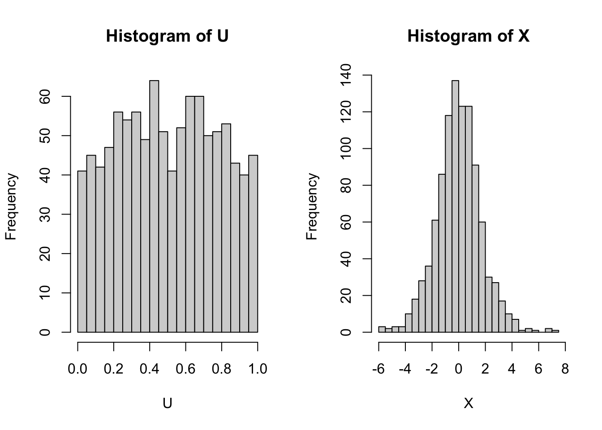
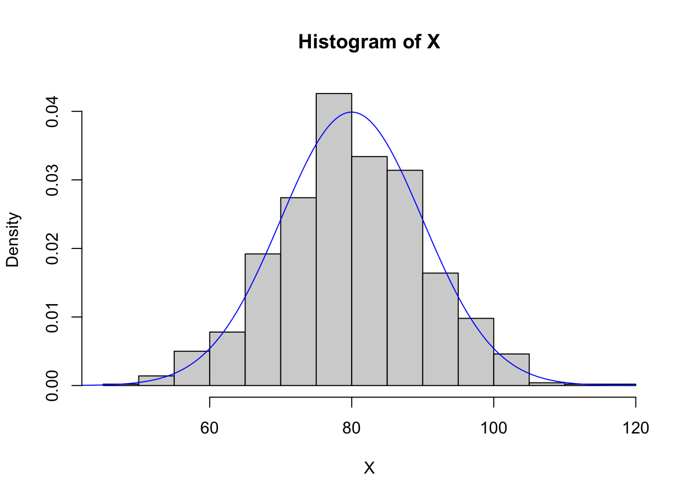
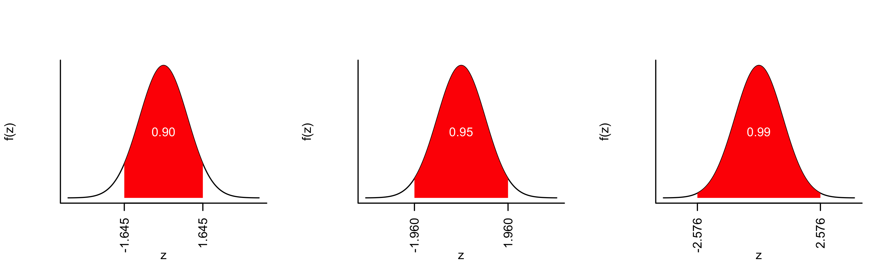
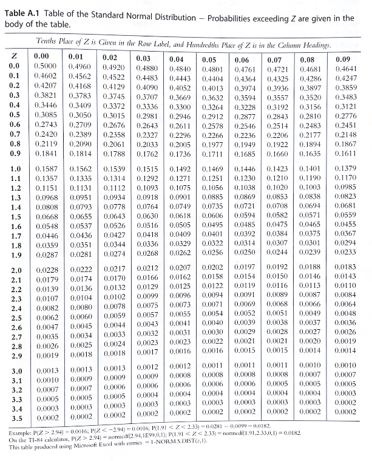
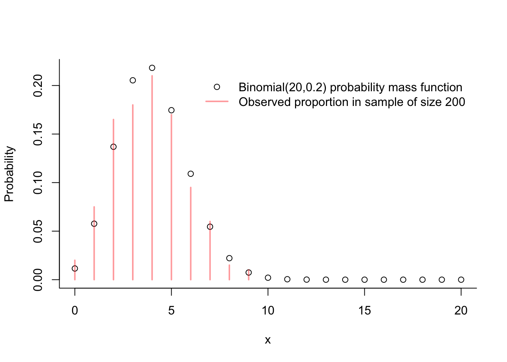
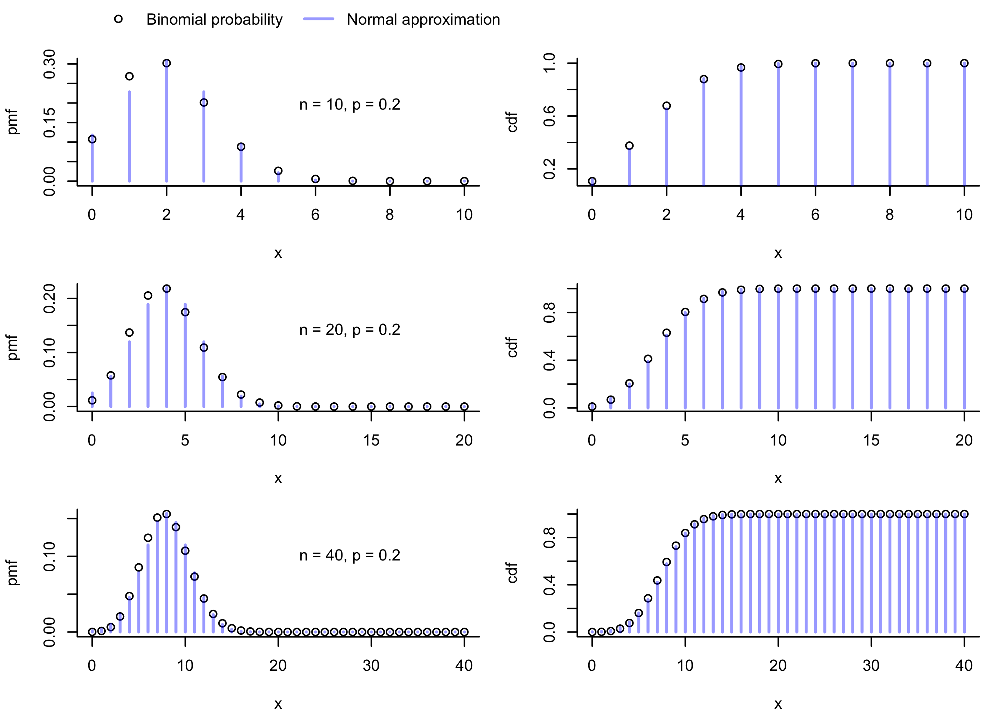
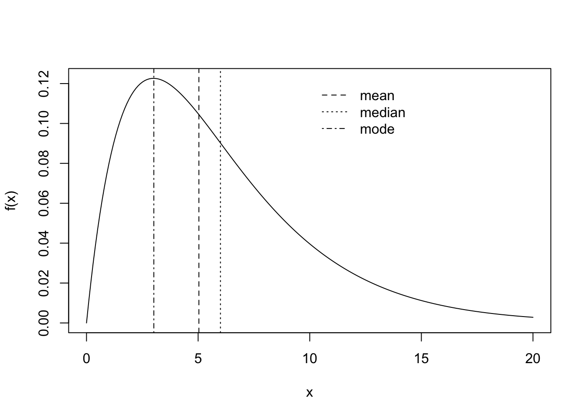
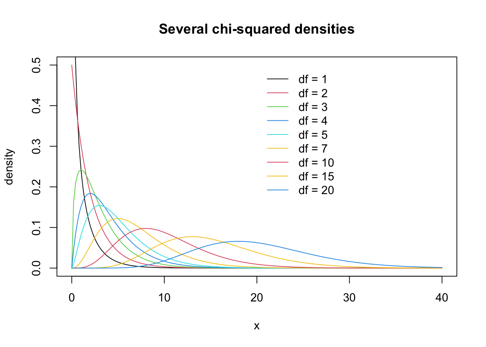
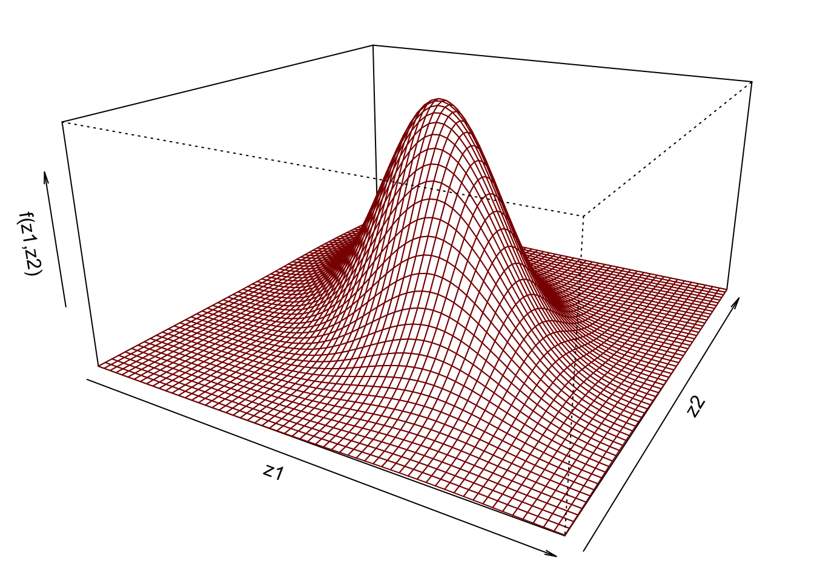
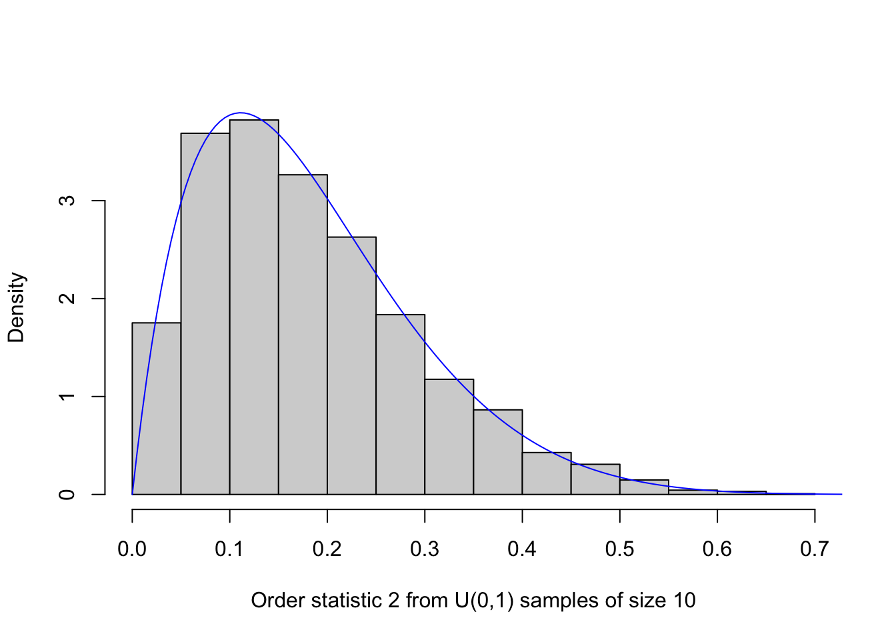

R has many built-in functions for generating realizations of random variables and evaluating probability mass/density functions (pmfs/pdfs), cumulative probability functions (cdfs), and quantile functions.
Random number generation
Before introducing these functions, we wish to comment briefly on the idea of generating random numbers from a computer. It is actually not possible to generate numbers truly at random from a computer (we might ask whether it is possible by any means at all to generate random numbers, but we will not stray this far into the philosophical). A computer program will produce output based deterministically on an input, meaning that once the input is known, the output is known. If one can generate a random input, then one can retrieve from a computer a sequence of numbers corresponding to this input: such an input is called a seed, and the numbers generated based on the seed can be regarded as pseudo-random numbers. Once a seed is fixed, the sequence of pseudo-random numbers a computer will produce is also fixed. Some software will set the seed according to the exact time of day that the software began running, so that each time a user runs the software, different sequences of pseudo-random numbers will be produced.
Many careers have been spent on coming up with better ways to make a computer construct sequences of numbers, based on a seed, which will satisfy tests of randomness. The principal aim has been to generate a sequence of numbers which act like independent realizations from the uniform distribution on the interval \((0,1)\). We can retrieve such sequence in R with the runif() function:
Once one has obtained a random realization on the interval \((0,1)\), one can transform it into a realization of a random variable from any other distribution by passing it through the quantile function of that distribution. Specifically, suppose \(X\) is a random variable with cdf given by \[
F(x) = P(X \leq x), \quad x \in \mathbb{R}.
\]
Then the quantile function of \(X\) is given by \[
Q(u) = \inf\{x : F(x) \geq u\}, \quad u \in (0,1),
\] where \(Q(u)\) is simply the inverse of \(F(x)\) when the latter is continuous and strictly increasing. So to generate a realization of \(X\), we generate a realization \(U\) from the uniform distribution on \((0,1)\) and set \(X = Q(U)\).
For example, to generate a realization of a random variable \(X\) having the logistic cdf \(F(x) = e^x/(1-e^x)\), we can generate a realization \(U\) from the uniform distribution on \((0,1)\) and set \(X = Q(U)\), where \(Q(u) = \log(u/(1-u))\) for \(u \in (0,1)\).
U <-runif(1000) X <-log(U/(1-U)) # logistic distribution quantile functionpar(mfrow=c(1,2)) # put next two plots side-by-sidehist(U,breaks =20)hist(X,breaks =20)

When generating realizations of random variables in R, this is what is happening in the background; the generation begins with the generation of pseudo-random realizations from the uniform distribution on \((0,1)\).
The rabbit hole of how such sequences of pseudo-random uniform realizations are generated is very deep, and we will not peer further into it than we have done in the above paragraphs. If interested see Chapter 2 of Robert and Casella (2004).
Functions for generating random variables
For each of several different distributions, R provides four functions: one for generating random realizations, one for evaluating the pmf or pdf (according to whether the distribution is for a discrete or continuous random variable), one for evaluating the cdf, and one for evaluating the quantile function. These four functions take the form rxxx(), dxxx(), pxxx(), and qxxx(), respectively, where xxx is replaced by an abbreviation for a distribution. Here are two examples, one continuous and one discrete:
normal distribution: rnorm(), dnorm(), pnorm(), and qnorm().
binomial distribution: rbinom(), dbinom(), pbinom(), and qbinom().
Each set of functions takes a different set of optional arguments depending on the distribution. For example, for the normal distribution the mean and standard deviation can be specified and for the binomial distribution the number of Bernoulli trials and the success probability of each trial can be specified.
To see a list of all the distributions included in R, execute this command:
?distributions
Normal distribution functions
Here we illustrate using the rnorm() and dnorm() functions:
set.seed(1) # you don't need to do this, but if you want to get the same "random" numbers each time you run your code, you can fix the seed with the set.seed() function.# rnorm() function to generate random realizationsn <-1000mu <-80sigma <-10X <-rnorm(n,mean = mu,sd = sigma) # specify mean and standard deviation# make a histogram of the realizationshist(X,freq = F, breaks =20) # set freq = F so it will have the height of a density# overlay pdf with dnorm() function evaluated at a sequence of x valuesx <-seq(mu -4*sigma, mu +4*sigma,length=200)lines(dnorm(x,mu,sigma)~x, col ="blue")

Here we use dnorm() as well as qnorm() to make some cool plots of the standard normal pdf.
# make three plots in one rowpar(mfrow=c(1,3))# make a sequence of z valuesz <-seq(-4,4,length=200)# define some upper quantilesu <-c(0.05,0.025,0.005)# for each value in u, shade the region between the upper and lower quantilesfor(j in1:length(u)){ qu <-qnorm(c(u[j],1-u[j]))plot(dnorm(z)~z,type ="l",ylab ="f(z)",bty ="l",xaxt ="n",yaxt ="n")axis(side =1, las =2, at = qu, labels =sprintf(qu,fmt="%.3f")) x <-c(qu[1],seq(qu[1],qu[2],length=100),qu[2],qu[1]) y <-c(0,dnorm(seq(qu[1],qu[2],length=100)),0,0)polygon(x, y, col ="red",border ="NA")text(x =0, y =0.5*dnorm(0), label =sprintf(1-2*u[j],fmt="%.2f"), col ="white")}

Here we use the pnorm() function to reproduce this \(z\)-table from Mohr, Wilson, and Freund (2021):

cols <-seq(0,0.09,by=0.01)rows <-seq(0,3.5,by=0.1)ncols <-length(cols)nrows <-length(rows)tab <-matrix(NA,nrows,ncols)for(i in1:nrows)for(j in1:ncols){ z <- rows[i] + cols[j] tab[i,j] <-round(1-pnorm(z),4) # area under the curve to the right of z, rounded to four decimal places }# name the columns and rowscolnames(tab) <- colsrownames(tab) <- rowstab
Here we illustrate the rbinom() and dbinom() functions.
N <-200# draw this many realizationsn <-20# number of Bernoulli trials for the Binomial random variablep <-1/5# success probabilityX <-rbinom(N,n,p)# the table() function can be useful for summarizing observations of a discrete random variabletable(X)
X
0 1 2 3 4 5 6 7 8 9
4 15 33 36 42 34 19 12 3 2
x <-0:nplot(dbinom(x,n,p)~x,bty ="l",xlab ="x",ylab ="Probability")points(table(X)/N, col =rgb(1,0,0,.4))# Next two lines help you find coordinates relative to the plotting window.# Useful if you want to position a legend irrespectively of the axes.xpos <-grconvertX(.4, from="ndc", to ="user") # 40% percent from the leftypos <-grconvertY(.8, from="ndc", to ="user") # 80% percent from the bottomlegend(x = xpos, y = ypos,pch =c(1,NA),lty =c(NA,1),lwd =c(NA,2),col =c("black",rgb(1,0,0,.4)),legend =c(paste("Binomial(",n,",",p,") probability mass function",sep=""),paste("Observed proportion in sample of size ",N,sep="")),bty ="n")

Here we illustrate the pbinom() function in a program which makes some plots for visualizing the normal approximation to the binomial distribution. Recall that for \(X \sim \text{Binomial}(n,p)\) we have \[
P(X = x) = {n \choose x}p^x(1-p)^{n-x}.
\] For large \(n\), the central limit theorem gives \[
X \overset{\text{approx}}{\sim} \text{Normal}(np,np(1-p)),
\] where the approximation improves as \(n \to \infty\). Now, we would like to use the Normal distribution to approximate the probabilities \(P(X = x)\), but since the Normal distribution is for a continuous random variable, it will assign probability zero to any single value \(x\). To get around this, we note that for the binomial random variable \(X\), which is discrete, we have \[
P(X = x) = P( x - 1/2 < X < x + 1/2)
\] for every integer-valued \(x\), so we will approximate the probability \(P(X = x)\) with the probability assigned by the \(\text{Normal}(np,np(1-p))\) distribution to the interval \((x - 1/2,x+1/2)\). That is, we will use the approximation \[
P(X = x) \approx \left\{\begin{array}{ll}\Phi\Big(\frac{x + 1/2 - np}{\sqrt{np(1-p)}}\Big),& x = 0\\
\Phi\Big(\frac{x + 1/2 - np}{\sqrt{np(1-p)}}\Big) - \Phi\Big(\frac{x - 1/2 - np}{\sqrt{np(1-p)}}\Big),& x > 0, \end{array}\right.
\] where \(\Phi\) denotes the cdf of the \(\text{Normal}(0,1)\) distribution. Likewise, we will approximate the cumulative distribution function of the \(\text{Binomial}(n,p)\) distribution as \[
P(X \leq x) \approx \Phi\Big(\frac{x + 1/2 - np}{\sqrt{np(1-p)}}\Big)
\] These approximations improve as \(n \to \infty\).
p <-1/5# success probabilitynn <-c(10,20,40) # select a few sample sizes# set up plotting so the the plots will appear in a 3 by 2 gridpar(mfrow=c(3,2),mar=c(4.1,4.1,1.1,1.1), # adjust the margin of each plot so the plots don't get squishedoma =c(0,0,2,0)) # make a top outer margin in which to place a legend# loop through the three sample sizes in nnfor(i in1:3){# set sample size for this step in the loop n <- nn[i] x <-0:n# obtain normal approximations to cdf and pmf x_correct <-0:n +0.5# use the continuity correction pn <-pnorm(x_correct,n*p,sd =sqrt(n*p*(1-p))) # cdf dn <-c(pn[1],diff(pn)) # pmf by differencing. Check ?diff# make plotsplot(dbinom(x,n,p)~x,bty ="l",xlab ="x",ylab ="pmf")points(dn~x, col =rgb(0,0,1,.4), type ="h", lwd =2) xpos <-grconvertX(.7,from="nfc",to="user") ypos <-grconvertY(.7,from="nfc",to="user")text(x = xpos, y = ypos,labels =paste("n = ",n,", p = ",p,sep=""))plot(pbinom(x,n,p)~x,bty ="l",xlab ="x",ylab ="cdf" )points(pn~x, col =rgb(0,0,1,.4), type ="h", lwd =2)}xpos <-grconvertX(.1,from="ndc",to="user")ypos <-grconvertY(1,from="ndc",to="user")legend(x = xpos, y = ypos,horiz = T, # give legend a horizontal orientationpch =c(1,NA),lty =c(NA,1),lwd =c(NA,2),col =c("black",rgb(0,0,1,.4)),legend =c("Binomial probability","Normal approximation"),bty ="n",xpd =NA) # xpd = NA is sometimes need to make something appear in the outer margin

You may experiment with the qbinom() function on your own!
Practice
Practice writing code and anticipating the output of code with the following exercises.
Write code
Make a plot like the one below of a gamma distribution pdf. The pdf of the \(\text{Gamma}(\alpha,\beta)\) distribution is given by \[
f(x,\alpha,\beta) = \frac{1}{\Gamma(\alpha)\beta^{\alpha}}x^{\alpha - 1}e^{-x/\beta}, \quad x > 0
\] for a shape parameter \(\alpha\) and a scale parameter \(\beta\); the expected value of a random variable \(X\) having this density is \(\mathbb{E}X = \alpha\beta\). The gamma distribution functions in R are rgamma(), dgamma(), pgamma(), and qgamma(). Run ?dgamma() to make sure you understand how to put in the arguments. Choose your own values of the shape and scale parameters \(\alpha\) and \(\beta\). Put vertical lines at the mean, the median (the median is the 0.5 quantile of the distribution), and the mode (the value of \(x\) for which \(f(x,\alpha,\beta)\) is greatest) as shown.

Make the plot below showing the pdf of the chi-squared distribution for several values of the degrees of freedom parameter. The chi-squared pdf is given by \[
f(x,\nu) = \frac{1}{\Gamma(\nu)2^{\nu/2}}x^{\nu/2 - 1}e^{-x/2}, \quad x > 0
\] where \(\nu >0\) is the degrees of freedom parameter and \(\Gamma(\cdot)\) is the gamma function. The chi-squared pdf can be evaluated with the R function dchisq(). Write a for loop to put all the curves on the plot (note that you can put numbers in for col=)!

The standard bivariate normal probability density function is given by \[
f(z_1,z_2, \rho) = \frac{1}{2\pi\sqrt{1-\rho^2}}\exp\Big(\frac{z_1^2 - 2 \rho z_1z_2 + z_2^2}{2(1-\rho^2)}\Big) ,\quad z_1,z_2 \in \mathbb{R},
\] where \(\rho \in (-1,1)\) is the correlation parameter. Make a plot like the one below of this function (you will have to define your own function and evaluate it over a grid of points) with your own choice of the parameter \(\rho\). You can use the persp() function to create the 3-d plot.

Fix some integers \(n \geq 1\), \(k \in \{1,\dots,n\}\), and \(S\), where \(S\) is large (say at least a thousand). Then generate \(S\) samples of size \(n\) from the \(\text{Uniform}(0,1)\) distribution and on each sample retrieve the \(k\)th order statistic—this is the value appearing in position \(k\) when the vector is sorted in increasing order. You can do the above with with a for loop or in some other way. Then make a histogram of these \(k\)th order statistic values. On top of the histogram, overlay the pdf of the \(\text{Beta}(k,n-k+1)\) distribution (can use dbeta() function). For \(n=10\), \(k = 2\), and \(S = 5000\), my plot looks like this:

Read code
Explain what this function will do:
rdbexp <-function(n,lambda =3){ sgn <-sample(c(-1,1),n,replace=T) x <-rexp(n,lambda) val <- sgn * xreturn(val)}